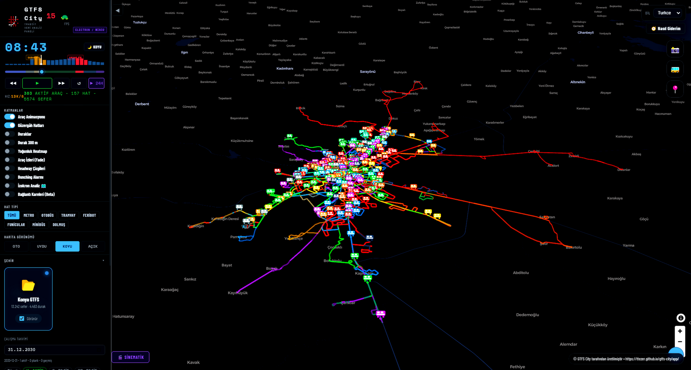
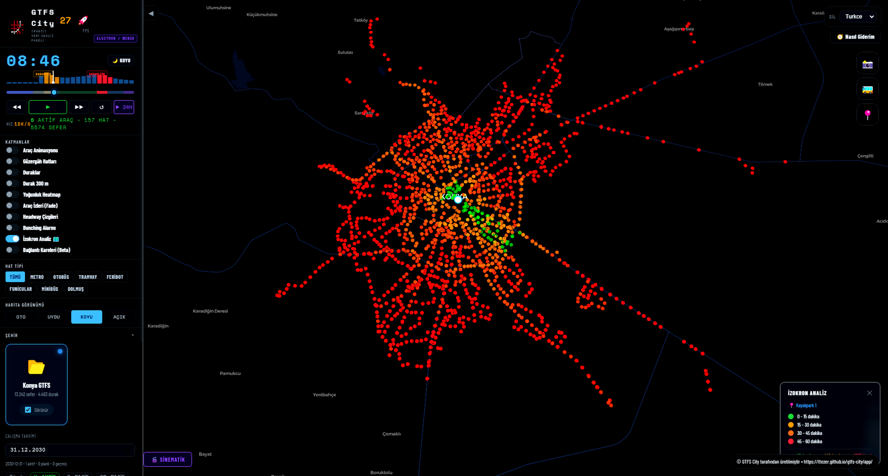
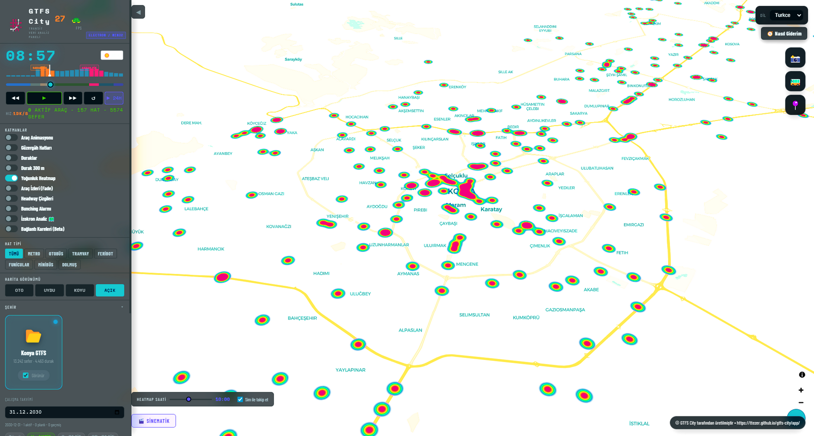

Açık Kaynak GTFS Aracı
GTFS City
Toplu taşıma verinizi haritada görün, analiz edin.
Ücretsiz. Açık kaynak.
Nasıl Çalışır?
Yükleyin
GTFS ZIP dosyanızı sürükleyin
›
İzleyin
Araçlar haritada hareket eder
›
Analiz Edin
Boşlukları ve sorunları bulun
Özellikler
Simülasyon
Sefer saatlerine göre araç hareketi

Simülasyonİzokron Analizi
Erişilebilir alanları görün

İzokron AnaliziBağlantı Kareleri
Ağ erişilebilirlik skoru
 Bağlantı Kareleri
Bağlantı Kareleri
Yoğunluk Haritası
Sefer yoğunluğu ısı haritası

Yoğunluk HaritasıBunching Tespiti
Yapışan araçları işaretle
 Bunching Tespiti
Bunching Tespiti
Yol Tarifi
Rota ve aktarma önerisi
 Yol Tarifi
Yol Tarifi
Açık Kaynak
Kodu inceleyin, uyarlayın, katkıda bulunun. Masaüstü ve web olarak çalışır.